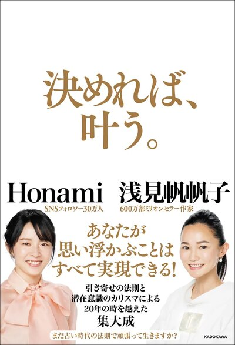
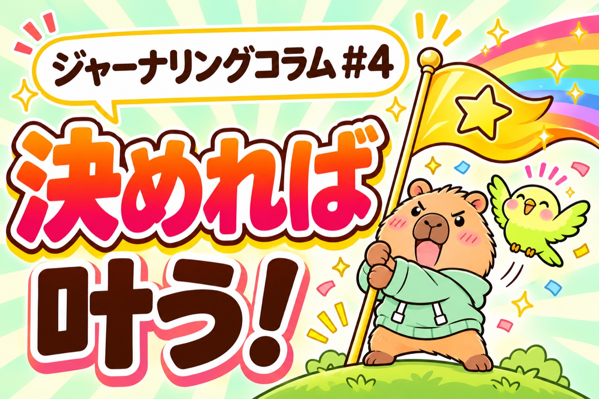
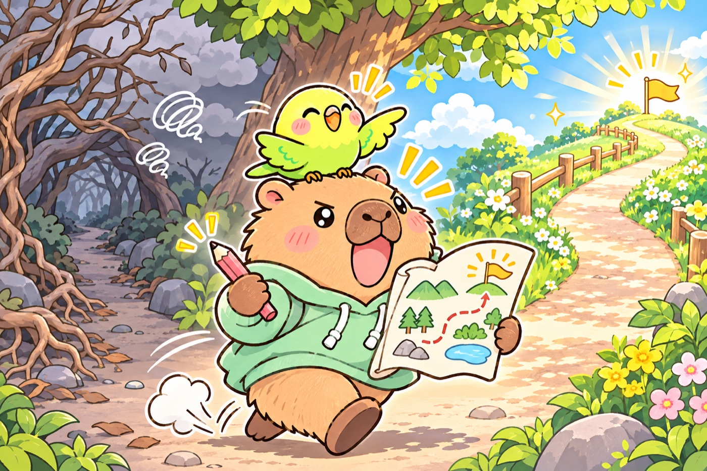
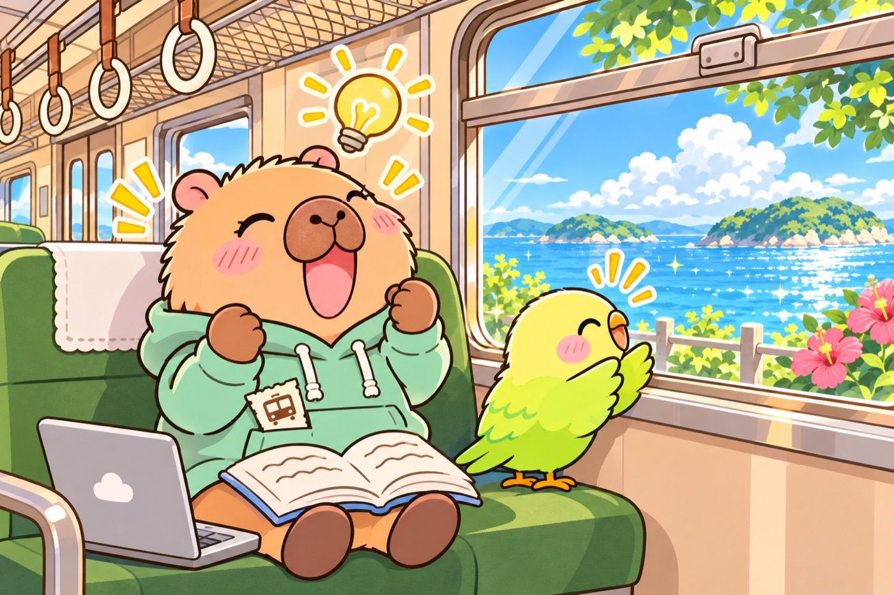
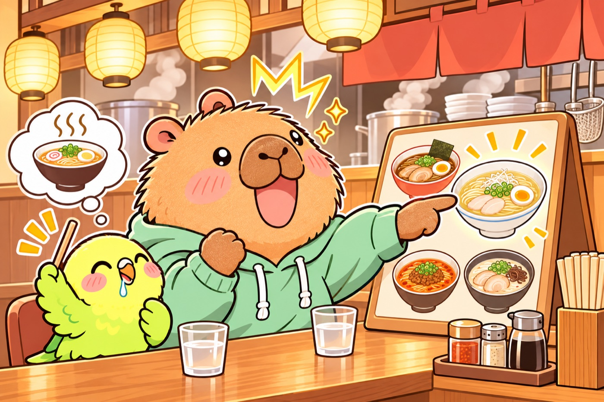

決めれば、叶う。
決めれば、叶う。
浅見帆帆子・HonamiKADOKAWA
オーディオブックで何度も聴いている、私の大好きな本です🦫

夜勤の休憩中にしゃべった声を、そのままお届けします。見ても聴いても、どっちでもどうぞ😊
♪ BGM：Morning／しゃろう
そんな方、いませんか？
はい、優柔不断でよく迷う、まさに私です🤣
みなさん、おはようございます〜！
ストレングスファインダー認定コーチのおけもんです🦫
今日もジャーナリングコラム、やっていこうと思います🙌
無事に三日坊主をクリアできました！ 読んでくださっているみなさんも、4日目のお付き合いありがとうございます😊
今日のテーマは、「決めれば、叶う。」です。
私、この言葉がすごく好きで、座右の銘というか、好きな言葉にも挙げています。
この言葉は、浅見帆帆子さんとHonamiさんの共著『決めれば、叶う。』のタイトルなんです。浅見さんの『あなたは絶対！運がいい』を読んだことがある方も多いんじゃないでしょうか？ Honamiさんもすごく有名なYouTuberさんで、私もお二人のYouTubeを見たりしています😊
ジャーナリングでも人生でも、「ほんまに決めれば叶うなぁ」と思うことがいくつもあって。今日はそんなお話をさせてください✨
そう感じたきっかけのひとつが、前回のフェスでした。
私は会場には行っていないんですが、知っている方が何人も登壇されていたので、そのステージや、流れで他の方の登壇も聞かせていただいたんです。
実績を出された方や、いろんな活動をされている方のかなりリアルな体験談。その中で、すごく印象に残ったことがありました。
結果を出している人、人生がうまくいっている人って、まず決めているんですよね。
「できるか、できないか」ではなく、「決めたことに対して、どう動くか」を話されていたんです😳
たとえば、私の知り合いに、お子さんを3人育てながら活動しているプロのライターさんがいらっしゃいます。
もともとは、たぶん英会話か何かの先生をされていた方だと思うんですが、「私はライターになる」と決めて、なんとまだライティングの勉強をする前から、案件を取りに行ったそうなんです。
いざ何かを始めようとすると、ついこんなふうに考えちゃいますよね。
そう考えること自体は、全然悪いことじゃないと思います。
でも「やる」と決めることで、「できる・できない」のステージから、「じゃあ、どうやってやろうかな？」のステージへ進むんだろうなと思うんです。

そのライターさんも、子育てをしながら大変なことや苦しくなることがたくさんあったと思います。それでもどんどん案件を取りに行って、今はプロのライターとしてフリーランスで活動しながら、家庭も充実した生活を送られています。私も仲良くさせていただいている、本当に尊敬する方です😊
これまでのコラムでもお話ししたように、人は「決めたこと」に対して、勝手に情報を集めて動いていく生き物です。RAS（ラス）やカラーバス効果ですね。
だからこそ、まずはセンターピンを立てる。「そこに向けて動くぞ！」と決めることが、すごく大事なんだと思います🙌
いろんな本を読んだり、いろんな方と関わらせていただいたりする中で思うのは、幸せに生きている人って、自分で自分の人生を決めているんですよね。
決めるのは勇気がいるし、「失敗したらどうしよう」と怖いものでもあります。私だって即断即決できるタイプではなくて、優柔不断で迷うこともたくさんあります🤣
でも、「今、満足度が高いな」「生活が充実してるな」と感じる時を思い返すと、周りがどう言っているかより、「自分がこうしたいんやったら、やってみよう」と決めて動いている時なんです。
ちょっと話はそれるんですが、この前の夏に、青春18きっぷを買って、意味もなくいろんな電車を乗り回したんです🚃
お金を稼ぐとか、人生の生産性が上がるとかとは全然関係ないし、「なんでそんなことするの？」と言われるかもしれません🤣
でも、私にとってはすごくやってみたいことだったんですよね。
実際にやってみたら、幸福度がすごく高くて。ワクワクしながら移動して、本を読んだりパソコンを触ったりしていると、アイデアもどんどん湧いてくるんです✨

ここでひとつ注意点です。
「決めるのが大事」と聞くと、何か壮大なことを決めなきゃと思うかもしれませんが、まずは小さなことでいいんです😊
人生に迷っている時って、自分で決めるのが苦手になっていたり、「何をしていいかわからへん」と、やりたいことが浮かんでこなかったりしますよね。そんな時にいきなり大きな決断をするのは、すごく怖いことだと思います。
だから、日々の小さな決断で「自分で決めた」という感覚を、繰り返し育てていくことが大事なんです。
私はセッションでも、そんなお話になった時は、
とお話ししています。
もちろん、「何でもいい」がダメなわけではないんですよ。本当に何でもいい時もありますよね。
その時は、「何でもいい」を自分で決める。人の決めたことに乗る、という選択を、自分の中でするということです😊
私も、もともとは決めるのが苦手だったんですが、今は食事のメニューをパッと見て、直感や第一印象で決めるようにしています。

じっくり選ぶのが好きな方や、「どうせなら美味しいものを」とこだわる方を否定するわけではまったくありません。ただ私の中では、じっくり考えてもパッと決めても、満足度はあんまり変わらなかったんですよね🤣

オーディオブックで何度も聴いている、私の大好きな本です🦫
浅見帆帆子さんとHonamiさんが、章ごとに交互に書いている共著です。出版社の紹介にある中心の言葉は、「そうなる！」と、はっきり決めること。あとは毎日ワクワクしながら、夢と波長を合わせて過ごしていく、という本です。
本の流れは、5つのステップになっています👇
参考にした資料：KADOKAWA 公式の商品ページ／BookLive
録音のあとで、「決めることと幸せって、調べた人いるんかな？」と気になって、AIの相棒に調べてもらいました😊
私が話していた「自分で決めている時のほうが満足度が高い」という実感と、同じ方向の結果でした🙌 もちろん調査なので、「決めれば必ず幸せになる」とまで言えるものではないんですが、小さな「決める」を試してみる背中は、押してくれそうです😊
決めたのにうまくいかない時は、この動画もどうぞ👇
📺 浅見帆帆子さん・Honamiさんが出演した対談（2分45秒から） 「上手くいかない時の乗り越え方」｜いったん離れて、気持ちが上がることをしてから戻ってくる 👉 タップして動画を見る YouTubeが開きます（10年婚活コーチ マミイさんのチャンネル）ちなみに今、私は夜勤の休憩中なんですが、夜勤が終わったら塩元帥のラーメンを食べに行こうかな🍜と思っています。
こんなことで、全然いいんです🤣
自分で自分の人生を決めているという感覚が増えるほど、幸福度も、自分の人生を生きている実感も上がっていく。今ちょっと迷っている方も、もっと毎日を充実させたい方も、この感覚を思い出したり、今より少し育てたりしてもらえたらうれしいです😊
私も継続力がないので、「やってもやらんでもどっちでもいいな」と思っていたら、きっとこの毎日投稿もやらなかったと思います。
という話ではあるんですが（笑）、一応「やる」と決めたから、夜勤の休憩中でもこうやって音声を撮っています🎙️ やっぱり、決めることの効果は大きいなぁと思います🙌
感じたことや「こんなこと決めたよ！」の報告、ぜひお気軽にコメントやリアクションをいただけるとうれしいです。「じゃあ次はこれを喋ってみようかな」と、私もたくさん気づきをいただいています😊